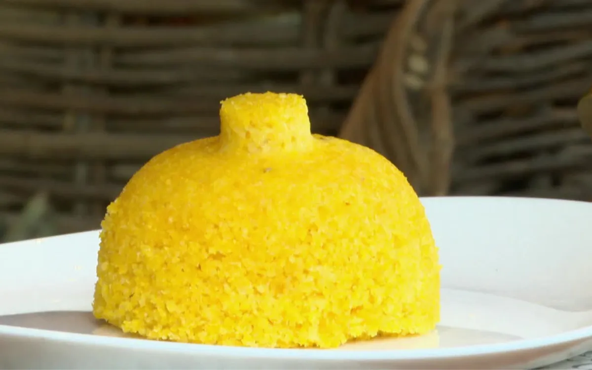

Clássico brasileiro, é excelente variação para o pão de todos os dias.
Fica delicioso com manteiga e faz par perfeito com umas colheradas de
leite de coco. Com ovo cozido, vira café da manhã dos campeões

Ingredientes
1/2 xícara (chá) de farinha de milho flocada
1/2 colher (chá de sal)
3/4 de xícara (chá) de água
2 colheres (sopa) de manteiga
Modo de preparo
Numa tigela misture a farinha de milho com o sal. Regue com a água
aos
poucos, mexendo com uma colher para umedecer a farinha – a textura
deve
ficar como a de areia molhada, bem úmida. Deixe hidratar por 10 minutos
–
assim os flocos ficam mais macios ao cozinhar no vapor.
Preencha o fundo da cuscuzeira com água e encaixe o cesto de vapor na
panela. Transfira a farinha de milho hidratada para o cesto, sem
compactar. Tampe e leve para cozinhar em fogo alto.
Assim que começar a ferver, vai sair um leve vapor pela lateral da
tampa.
Abaixe o fogo e deixe cozinhar por mais 10 minutos até o cuscuz ficar
bem
macio. Verifique ao abrir a tampa: o cuscuz deve estar inflado macio
ao
toque.
Desligue o fogo e, com cuidado para não se queimar ou virar o cesto,
puxe
a haste central para desenformar cuscuz. Transfira para uma tigela e
desfaça o cuscuz em pedaços com um garfo.
Numa tigela pequena misture a manteiga com ¼ de xícara (chá) da água
fervente da cuscuzeira. Mexa com uma colher até derreter pelo menos a
metade da manteiga – ela termina de derreter com o calor do cuscuz.
Regue a água com manteiga sobre o cuscuz e misture com o garfo – a
água
com manteiga deixa o cuscuz mais úmido e saboroso. Sirva a seguir.